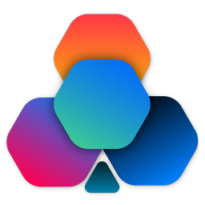
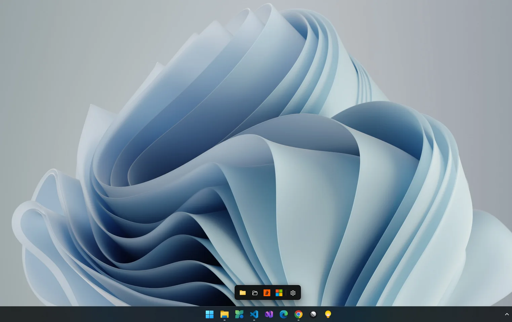
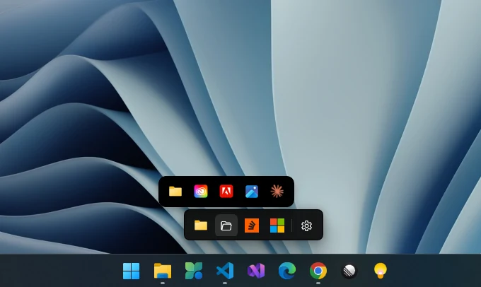
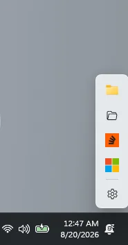
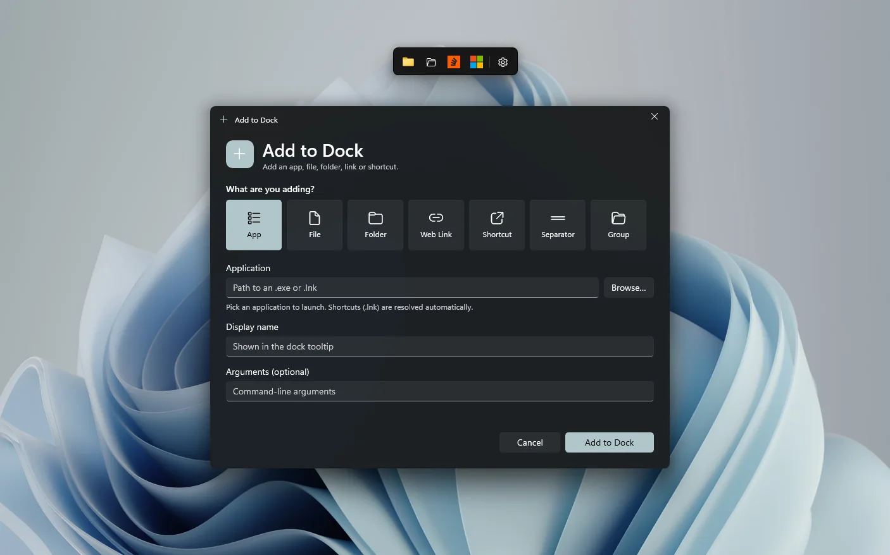
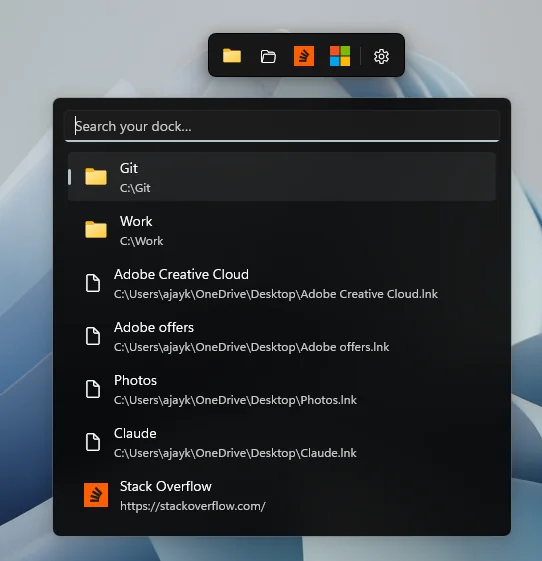
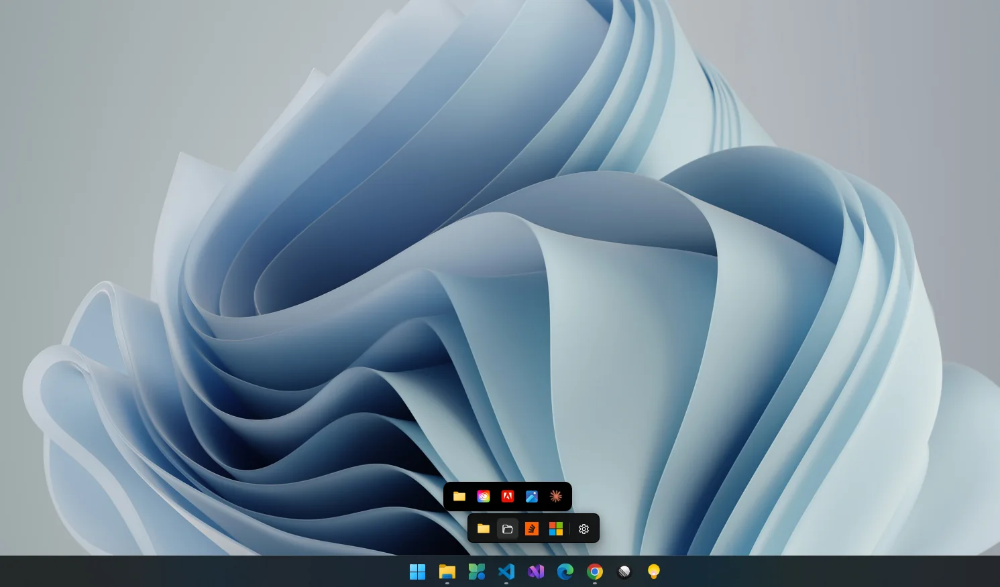
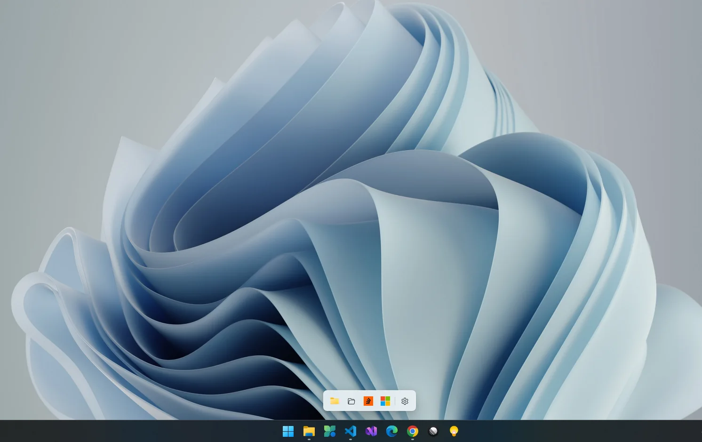
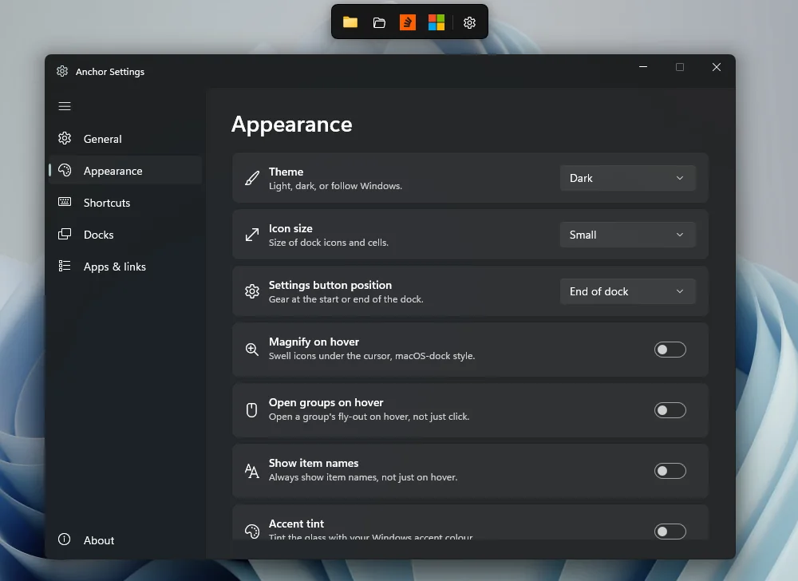

Glass that is glass
Real desktop acrylic.
Not a fake blur.
The same material as the Windows 11 taskbar, kept translucent even when the dock isn't the focused window. Light, Dark, or follow Windows.

Anchor for Windows
A native glass dock for the apps, files, folders and links you actually reach for. It stays out of the way until you whistle for it.

Windows already has a taskbar. Anchor is the strip you build for the handful of things you actually launch, then it gets out of the way.
Glass that is glass
The same material as the Windows 11 taskbar, kept translucent even when the dock isn't the focused window. Light, Dark, or follow Windows.
One dock per ocean
Each monitor gets its own pins, its own edge and its own hide behaviour.
A harbour, not a list
Same glass, same cells. Not a menu.

Summon it
One global shortcut slides every dock out and gives it focus. Rebind it to anything.
Speaks your language
A glass card filters every item on every dock. Anchor follows your Windows display language, or pick one, with no restart.
Out of sight
Snap it to a side and it slides away, leaving a small notch. Behind the taskbar, if you like.

Yours, on this PC
Out of the box, a pinned website's icon is the only thing Anchor ever fetches.
Take a closer look

Apps are just the start. Pin a file, a folder, a web link, a shell shortcut, a separator or a whole group. Browse picks the target; the name fills itself in. Or skip the window and drag straight from Explorer.

Quick-launch search opens a small glass card that filters every item on every dock, including the ones tucked inside groups. Esc or a click elsewhere dismisses it.
Give it its own shortcut in Settings, or open it from the dock's or the tray's right-click menu.

Drag an icon onto another to start a group. Hover it and a fly-out bar grows out of the icon, running across the dock and away from the edge it's snapped to.
Drag cells along the bar to reorder, or sideways off it to put them back on the strip.

The dock, its glass, and the Settings and Add windows all switch together. Turn on accent tint to wash the acrylic in your Windows accent colour.
High Contrast always wins, so Anchor never gets in the way of accessibility settings.

A Mica window with left navigation and six pages: General, Appearance, Shortcuts, Docks, Apps & links and About. Changes apply as you make them.
Tour every pageMagnification
Icons swell under the cursor, macOS-style. Or leave it off and get the Windows 11 taskbar's quiet highlight. Your call, one switch.
Groups & folder stacks
Groups and folders open as a second dock growing out of their icon: the same cells, glass and spacing as the strip itself.
Docks & edges
Drag the dock's background and drop it at any edge of any monitor to snap and auto-hide, or anywhere else to float.
Keyboard first
Give any icon a system-wide key combination, even one tucked inside a group. It's off by default, behind one master switch.
Settings
Anchor and the taskbar
Anchor lives beside the taskbar, not instead of it, and holds the things the taskbar can't.
Anchor runs entirely on your PC. There's no server to send anything to, because we never built one.
No sign-in, no profile, no email. Install it and it works.
No analytics, no advertising, no tracking of any kind. Not even anonymised.
Your docks live in dock.json under %AppData%\Anchor. Export them any time.
● GET https://<site>/favicon.ico — once per pinned web link, then cached
● GET https://icons.duckduckgo.com/ip3/<site>.ico — only if the site has no icon; sends the domain, nothing else
○ GET api.github.com/…/releases/latest — update check, portable build only, off until you turn it on
// Never pin a web link and Anchor makes no network requests at all.
And so much more
A dot under open apps. A click brings the window forward; Shift+click starts another.
Left-click to raise every dock. Right-click for Search, Add, Settings and Quit.
A thin divider you can drop and drag anywhere on the strip.
Point any item at a PNG, ICO, JPG, BMP or GIF, or pick a built-in glyph.
Small, Medium and Large. Medium matches the Windows 11 taskbar exactly.
Tooltips on hover, or keep a label under every icon.
Wash the glass in your Windows accent colour, restrained, never garish.
Put the settings button at the start or the end of the strip.
Save every dock, item and setting to a file. Restore it on another PC.
Per-user, no admin prompt, visible in Task Manager's Startup apps.
Accessibility themes always override Anchor's own colours.
Portable build only, off by default. It never downloads or installs anything.
Get Anchor
Two ways in. Same dock either way.
One click to install. The Store keeps it up to date for you.
No installer, no setup wizard, nothing written outside your user profile.
Anchor-win-x64-<version>.zip, or Anchor-win-arm64 on Windows on ARM.%LocalAppData%\Programs\Anchor.Self-contained: about 86 MB zipped, 215 MB extracted, with .NET 10 and the Windows App SDK bundled. Releases aren't code-signed yet, so SmartScreen may ask you to choose More info ▸ Run anyway on first launch.
Using it
Anchor behaves like the rest of Windows. Here's the whole manual on one screen.
Opens the item. If the app is already running, brings its window forward instead.
Starts another copy anyway, just like the Windows 11 taskbar.
Brings every dock to the front and gives it focus, from anywhere. Rebindable.
Along the strip to reorder, onto a group to file it, out of a group bar to bring it back.
Drop at a screen edge to snap and auto-hide, anywhere else to float.
Onto the dock to pin it, onto an app to open it there, onto a group to file it.
Open, Edit, Move to group, Move to dock, Shortcut, Open file location, Hide, Remove.
Add new, separator, new group, Search, Snap, another dock, Settings, Quit.
Left-click raises the docks. Right-click to show/hide, search, add, open Settings or quit.
1.2.3
Windows 11 (designed and tested on build 26200)
Windows 10 version 1809 (build 17763) and later should also work. Acrylic, rounded corners and Mica look their best on Windows 11.
x64 and ARM64
Separate native builds. There is no x86 build.
.NET 10 and WinUI 3 (Windows App SDK)
Self-contained. Nothing else to install.
About 86 MB zipped · about 215 MB on disk
No administrator rights, at install or at run time
Start with Windows uses a per-user mechanism in both builds.
English, Deutsch, Español, Français, हिन्दी, 日本語, Português (Brasil), 简体中文
Follows the Windows display language, or choose one. Switches live, no restart.
ms-settings:%AppData%\Anchor\dock.json
Plain JSON, exportable from Settings ▸ General. The Store build keeps it in the app's own package storage.
Favicons for pinned web links only
An update check exists in the portable build and is off by default.
MIT. Free and open source.
Right-click the tray icon and choose Quit Anchor, or right-click the dock's background. The dock deliberately stays off the taskbar, so there's no taskbar close button.
It auto-hides behind that edge. Move the cursor to the edge or onto the notch, press Ctrl+Alt+A, or click the tray icon. Turn off Auto-hide when snapped in Settings ▸ Docks to keep it visible.
Another app almost certainly owns that combination. Settings tells you when it can't register one. Pick a different combination, or switch the shortcut off entirely.
Yes. A single dock hides and reveals on whichever monitor you dropped it on. Or give each screen its own from Settings ▸ Docks ▸ Add dock, and each keeps its own items and edge.
Right-click it, choose Edit…, then Change icon… and pick a PNG, ICO, JPG, BMP or GIF. Use the default icon puts the original back.
No. Everything, including Start with Windows, is per-user.
The minimum is Windows 10 version 1809 (build 17763). Anchor is designed and tested on Windows 11, where acrylic, rounded corners and the Mica Settings window look their best.
Those are classic docks that fake transparency, or theming shells around the taskbar. Anchor is a native WinUI 3 app that uses the real Windows 11 acrylic, lives beside the taskbar rather than replacing it, and treats files and links as first-class items, not just apps.
Portable releases aren't code-signed yet. Choose More info ▸ Run anyway. The Microsoft Store version doesn't show this warning.
Use Settings ▸ General ▸ Export to save every dock, item and setting to a file, then Import it on the other PC. Importing replaces everything, so export first if you want to keep what's there.
Adding one is a single file. Copy src/Anchor/Strings/en.json, translate the values, and add the code to Loc.Available. The tests tell you if you missed a key. Translation fixes are welcome too.
Turn off Start with Windows, quit Anchor from the tray, then delete the folder you extracted and %AppData%\Anchor. That's everything.
Still stuck? Open an issue on GitHub
Anchor is MIT-licensed and developed on GitHub. Bug reports, feature ideas and translation fixes are all welcome.
If Anchor is useful to you, you can support its development.